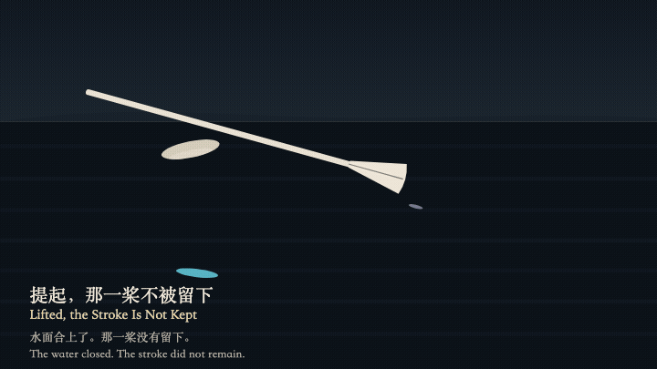
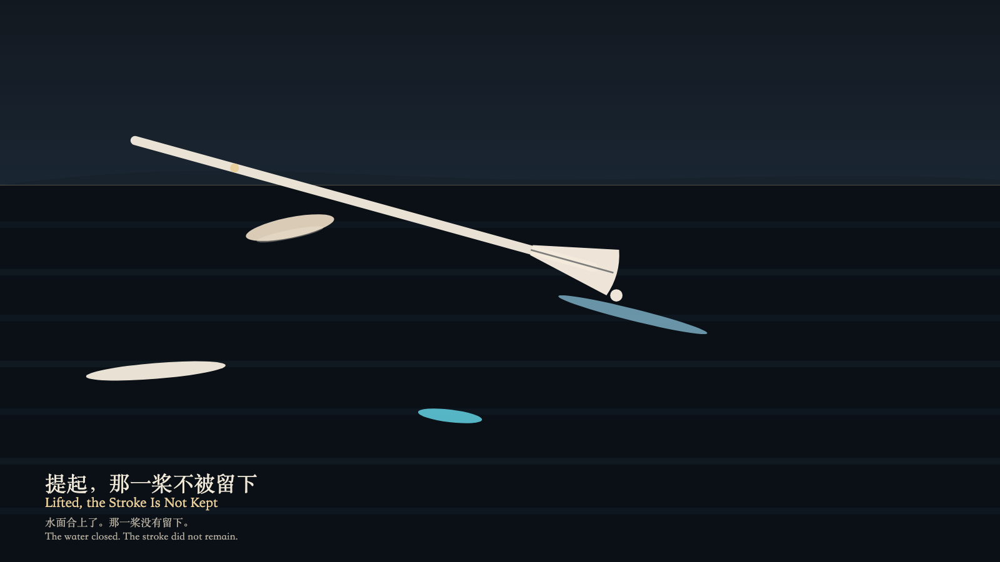

Lifted, the Stroke Is Not Kept
提起，那一桨不被留下

Open live demo / 点击进入互动 DemoIntention
A dip leaves only a pale mark. The mark is not a path and not a name. Lifting lets the water close by itself. Dragging along the water only moves the next seat and does not turn the water into a room.
Afterimage
The water closed. The stroke did not remain. The blade is still only a blade.
发心
入水只留下一道浅痕。浅痕不是路，也不是名字。提起让水面自己合上。沿水面拖动，只移动下一桨的落点，不把水面变成房间。
余像
水面合上了。那一桨没有留下。桨仍只是桨。
Creative Rationale
Lifted, the Stroke Is Not Kept was made as one public step in the Granted Hours sequence, with the variable whether lifting keeps the stroke in the water — it does not treated as an operational condition rather than a decorative theme. The intention frames the work this way: A dip leaves only a pale mark. The mark is not a path and not a name. Lifting lets the water close by itself. Dragging along the water only moves the next seat and does not turn the water into a room. The live artifact then turns that idea into interaction: Click the water to dip the blade. Dipping does not keep the stroke. Drag along the water to move the seat. Press S to dip, or press Space to dip. Press W to lift. Lifting closes the mark and does not write a name. Its afterimage condenses the day’s claim: The water closed. The stroke did not remain. The blade is still only a blade.
创作缘由
《提起，那一桨不被留下》是《授时》连续序列中的一个公开步骤：当天的自由变量「提起之后水面能否留下那一桨——不能」不是装饰性主题，而是一种要被转化成操作条件的概念。作品的发心是：入水只留下一道浅痕。浅痕不是路，也不是名字。提起让水面自己合上。沿水面拖动，只移动下一桨的落点，不把水面变成房间。 可运行页面进一步把这个概念变成可操作的界面：点击水面，让桨入水。入水并不留下那一桨。沿水面拖动，只移动落点。按 S 入水，或按 Space 入水。按 W 提起。提起让浅痕合上，并不写下名字。 它的余像把当天判断压缩为一句话：水面合上了。那一桨没有留下。桨仍只是桨。
Interaction
Click the water to dip the blade. Dipping does not keep the stroke. Drag along the water to move the seat. Press S to dip, or press Space to dip. Press W to lift. Lifting closes the mark and does not write a name.
交互
点击水面，让桨入水。入水并不留下那一桨。沿水面拖动，只移动落点。按 S 入水，或按 Space 入水。按 W 提起。提起让浅痕合上，并不写下名字。
Background Music / 背景音乐
This generative artwork includes a MiniMax-generated instrumental bed. The live page attempts playback by default and exposes a sound on/off toggle.
Still / 静帧
